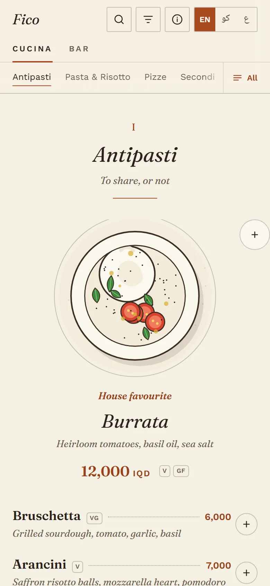
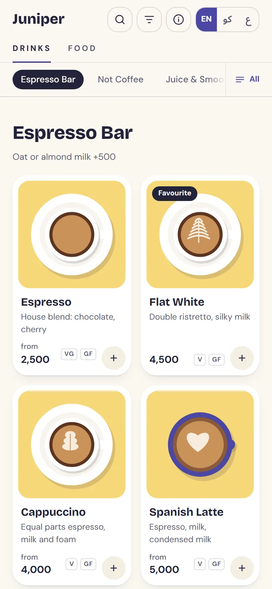
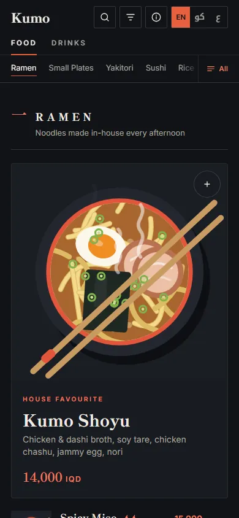
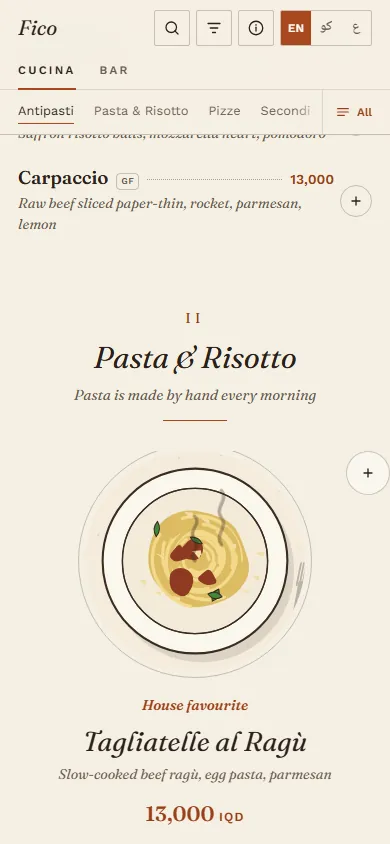

QR menu engine · portfolio project
One codebase, three fictional restaurants, three completely different menus. Each one is a JSON file and a handful of colour tokens. English, Kurdish and Arabic with real right-to-left layout, dish illustrations drawn in the browser, allergy filters, and offline support. No framework and no build step.
Izakaya & ramen bar, Erbil. Ink, washi and vermilion, with kanji chapter numerals.

Osteria & pizzeria, Duhok. Set like a printed card: italic serif, dot leaders, pen-and-ink dish art.

Café & bakery, Sulaymaniyah. Bright and rounded, a card grid, breakfast that ends at noon.
Open a dish and its illustration builds in the order it was drawn: the bowl, the broth, then each topping landing, then the chopsticks. Each brand moves in its own way. Kumo is unhurried, with steam rising off anything hot. Fico sketches the dish in ink before the colour washes in. Juniper pops things into place. Photo menus can't do this.

Kumo. Set down slowly. Steam on hot dishes.

Fico. Inked like a pen sketch, then washed with colour.
Juniper. Quick and bouncy. Added dishes fly to your list.
That phone is the real menu, not a recording. Pick a brand to open it, then:
Everything here came out of a menu I built for a real restaurant, now generalised so any restaurant can use it.
English, Kurdish (Sorani) and Arabic. One stylesheet in logical properties mirrors cleanly, and each brand carries a matching Arabic-script typeface.
No photos needed on day one. Each dish is a one-line spec drawn as SVG in the brand's own style. Real photos drop in later.
The EU 14 allergens and vegetarian, vegan and gluten-free filters. Allergens are marked, never hidden: hiding them would imply the rest are safe.
Guests add dishes with quantities and sizes, see a running total, then flip to a big-type “show to server” view. No accounts, no network.
Weekly hours, closed days, and service past midnight, computed in the restaurant's timezone. Breakfast and lunch dim outside their window.
Every dish has its own link. The phone's back gesture closes the open sheet instead of leaving the menu.
Restaurant wi-fi drops. A service worker keeps the menu, fonts and every brand available without a connection.
The same data prints as a clean two-column A4 card. No second file to keep in sync.
Every text colour in every brand passes WCAG AA, checked by script. Full keyboard support, focus trapping, and reduced-motion respected.
The first word is the vessel and the rest are layers drawn in order. The same line reads as a woodblock print in Kumo, a pen sketch in Fico, and flat pastel in Juniper. Edit it:
Dishes, translations, prices and sizes, allergens, tags, weekly hours, serving windows, contact details and the illustration style all live in one file per brand. The palette and fonts are a block of CSS tokens.
Onboarding a new restaurant means writing data, not code. Swapping an illustration for a real photo is one field.
// menu/brands/fico.json, one dish { "id": "margherita", "cat": "pizze", "name": { "en": "Margherita", "ku": "مارگریتا", "ar": "مارغريتا" }, "desc": { "en": "Tomato, fior di latte, basil", … }, "prices": [ { "label": { "en": "26 cm" }, "price": 9000 }, { "label": { "en": "33 cm" }, "price": 12000 } ], "tags": ["veg", "pick"], "allergens": ["gluten", "milk"], "art": "board pizza:basil" }